Contents
Factor modelling of assets
Global Commands
clear;clc;
directory='D:\PROIECTE\berlin_2018\Final_code';
addpath(genpath(directory))
cd(directory)
size_font=9;
size_line=1.5;
set(0,'DefaultAxesFontSize',size_font,'DefaultTextFontSize',size_font);
set(0,'defaultlinelinewidth',size_line)
set(0, 'defaultFigurePaperType', 'A4')
set(0, 'defaultFigurePaperUnits', 'centimeters')
set(0, 'defaultFigurePaperPositionMode', 'auto')
figure_wide=[680 678 800 420];
color_blue=[0 102 204]./255;
color_green=[0 204 102]./255;
color_red=[204 0 0]./255;
color_black=[0 0 0];
rng(1)
Data
load stats_static.mat
Corr
h=figure();
Rho=corr(stats);
Sigma=cov(stats);
imagesc(Rho);
colormap(coolwarm);
set(gca,'YTick',[1:length(est_labels)],'YTickLabel',est_labels, 'FontSize', 10);
set(gca,'XTick',[1:length(est_labels)],'XTickLabel',est_labels, 'FontSize', 10);
xtickangle(90);
colorbar();
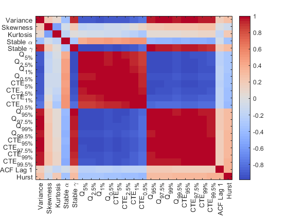
Eigenvalues
h=figure();
Eig=eig(Rho);
pareto(Eig);
yyaxis left
xlabel('Factors')
ylabel('Eigenvalue')
yyaxis right
ylabel('Cumulative variance proportion');
xlabel('Factors');
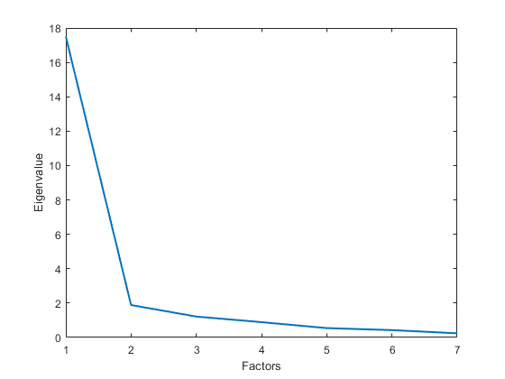
Factor model
[loadings,F] = factor_an_static(stats);
h=figure();
imagesc(loadings)
colormap(coolwarm)
xlabel('Factor')
ylabel('Loading')
set(gca,'YTick',[1:length(F)],'YTickLabel',est_labels, 'FontSize', 10);
colorbar()
set(gca,'XTick',[1:3])
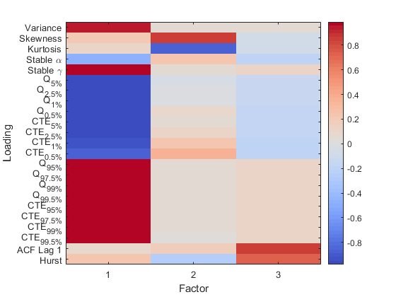
Loadings
user_factor=2
for user_factor=[2 3]
h=figure();
biplot(abs(loadings(:,[1 user_factor])),'VarLabels',est_labels)
xlim([0 1]);ylim([0 1])
xlabel('Tail Factor (absolute loadings)')
if user_factor==2
ylabel('Moment factor (absolute loadings)')
elseif user_factor==3
ylabel('Memory Factor (absolute loadings)')
end
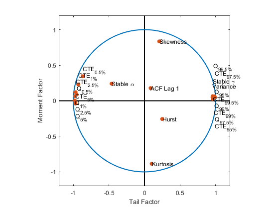 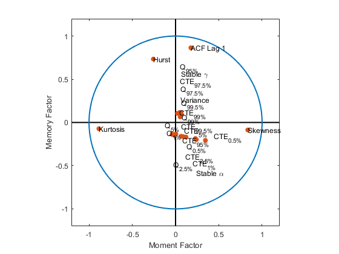
Scores
color_assets=nan(n_assets,3);
color_crypto=nan(n_assets,3);
[~,index_type_raw]=unique(type_assets,'stable');
index_type=[index_type_raw; n_assets];
n_types=length(index_type(1:end-1));
for i=1:n_assets
if strcmp(type_assets{i},'Crypto')==1
color_assets(i,:)=color_green;
color_crypto(i,:)=color_green;
elseif strcmp(type_assets{i},'Stock')==1
color_assets(i,:)=color_black;
color_crypto(i,:)=color_black;
elseif strcmp(type_assets{i},'Exchange rate')==1
color_assets(i,:)=color_blue;
color_crypto(i,:)=color_black;
elseif strcmp(type_assets{i},'Commodity')==1
color_assets(i,:)=color_red;
color_crypto(i,:)=color_black;
end
end
h=figure();
scatter(F(:,1),F(:,user_factor),[],color_assets,'filled')
text_delta=0.3;
index_crypto=strcmp(type_assets,'Crypto');
text(F(index_crypto,1)+text_delta,F(index_crypto,user_factor),...
asset_unique(index_crypto));
xlabel('Tail Factor')
if user_factor==2
ylabel('Moment factor')
elseif user_factor==3
ylabel('Memory Factor')
end
hold on
for i=1:n_types
if i==1
user_color=color_green;
elseif i==2
user_color=color_black;
elseif i==3
user_color=color_blue;
elseif i==4
user_color=color_red;
end
x=[F(index_type(i):index_type(i+1)-1,1),...
F(index_type(i):index_type(i+1)-1,user_factor)];
grid_add=3;
grid_x=min(x(:,1))-grid_add:0.1:max(x(:,1)+grid_add);
grid_y=min(x(:,2))-grid_add:0.05:max(x(:,2)+grid_add);
[x1_raw,x2_raw] = meshgrid(grid_x, grid_y);
x1 = x1_raw(:);
x2 = x2_raw(:);
xi=[x1,x2];
fd=ksdensity(x,xi,'PlotFcn','contour');
user_level=0.015;
[C,~]=contour(grid_x,grid_y,reshape(fd,length(grid_y),length(grid_x)),[user_level,user_level],...
'color',user_color,'linewidth',1.5);
end
hold off
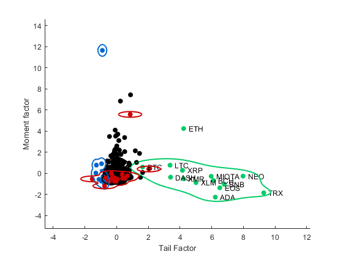
end
user_factor =
2
3d
scatter3(F(:,1),F(:,2),F(:,3),[],color_assets,'filled')
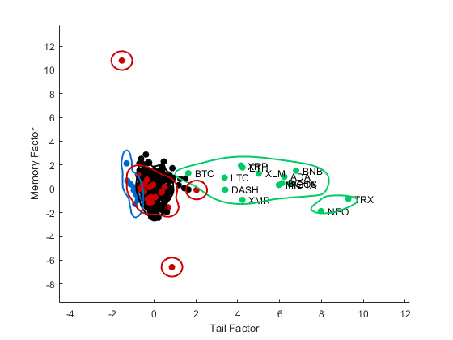
Logistic Regression
type_crypto=strcmp(type_assets,'Crypto');
type_crypto_mod=type_crypto+1;
for i=1
[est_reg_para,est_reg_dev,est_reg_stats]=mnrfit(F,type_crypto_mod);
end
Linear Classification
h=figure();
user_factor=2;
scatter(F(:,1),F(:,user_factor),[],color_crypto,'filled'); hold on;
lda = fitcdiscr(F(:,[1 user_factor]),type_crypto);
K = lda.Coeffs(1,2).Const;
L = lda.Coeffs(1,2).Linear;
F_min=min(F(:,2))-2;
f = @(x1,x2) K + L(1)*x1 + L(2)*x2;
z=ezplot(f,[min(F(:,1)) max(F(:,1)) F_min max(F(:,2))]);
set(z,'color',color_red,'linewidth',2)
ldaClass = resubPredict(lda);
bad = ldaClass~=type_crypto;
plot(F(bad,1), F(bad,2), 'rx');
title '';
xlabel('Tail Factor');ylabel('Moment Factor');
hold off;
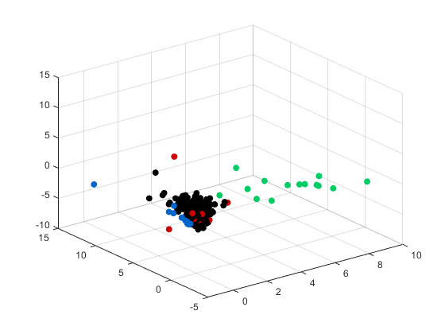 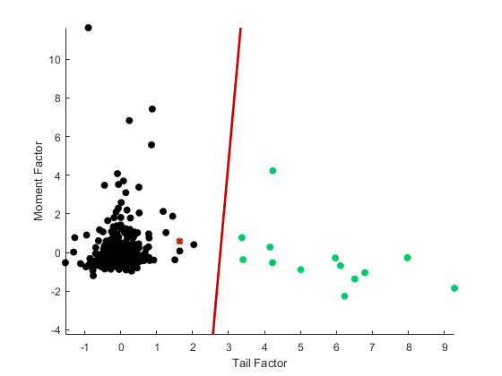
Quadratic Classification
h=figure();
scatter(F(:,1),F(:,user_factor),[],color_crypto,'filled'); hold on;
lda = fitcdiscr(F(:,[1 user_factor]),type_crypto,'DiscrimType','quadratic');
K = lda.Coeffs(1,2).Const;
L = lda.Coeffs(1,2).Linear;
Q = lda.Coeffs(1,2).Quadratic;
f = @(x1,x2) K + L(1)*x1 + L(2)*x2 + Q(1,1)*x1.^2 + ...
(Q(1,2)+Q(2,1))*x1.*x2 + Q(2,2)*x2.^2;
z = ezplot(f,[min(F(:,1)) max(F(:,1)) F_min max(F(:,2))]);
set(z,'color',color_red,'linewidth',2)
ldaClass = resubPredict(lda);
bad = ldaClass~=type_crypto;
plot(F(bad,1), F(bad,2), 'rx');
xlabel('Tail Factor');ylabel('Moment Factor');
title '';
hold off;
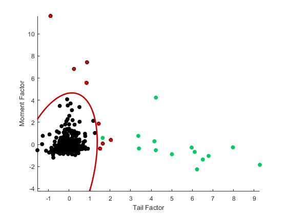
SVM
cl = fitcsvm(F(:,1:2),type_crypto,'KernelFunction','rbf',...
'BoxConstraint',Inf,'ClassNames',[0,1]);
d = 0.02;
[x1Grid,x2Grid] = meshgrid(min(F(:,1)):d:max(F(:,1)),...
F_min:d:max(F(:,2)));
xGrid = [x1Grid(:),x2Grid(:)];
[~,scores] = predict(cl,xGrid);
h=figure();
z(1:2) = scatter(F(:,1),F(:,user_factor),[],color_crypto,'filled');
hold on
contour(x1Grid,x2Grid,reshape(scores(:,2),size(x1Grid)),[0 0],'color',color_red,'linewidth',2);
title('');
xlabel('Tail Factor');ylabel('Moment Factor');
hold off
SVM = fitcsvm(F(:,1:2),type_crypto,'KernelFunction','rbf',...
'BoxConstraint',Inf,'ClassNames',[0,1]);
SVMM = fitPosterior(SVM);
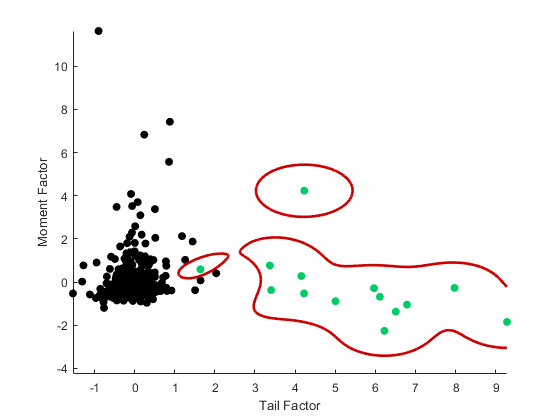